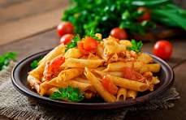

Home
Pasta Recipe

Description
Pasta is a simple and delicious dish that can be prepared with a variety of sauces and incredients. This recipe combines pasta with a flavorful tomato-based sauce, herbs, and cheese for a quick and satisfying meal.
It is perfect for lunch or dinner and can be customized with vegetables of your favorite protein.
Ingredients
- 250 g pasta
- 2 tbsp olive oil
- 3 cloves garlic, minced
- 2 cups tomato sauce
- 1 tsp Italian seasoning
- Salt and pepper to taste
- ½ cup Parmesan cheese
- Fresh basil for garnish
Steps
- Boil the pasta until al dente.
- Drain the pasta and set it aside.
- Heat olive oil in a pan.
- Saute the garlic until fragrant.
- Add the tomato sauce and Italian seasoning.
- Simmer for 5-10 minutes.
- Mix the cooked pasta into the sauce.
- Sprinkle with Parmesan cheese.
- Garnish with fresh basil and serve warm.